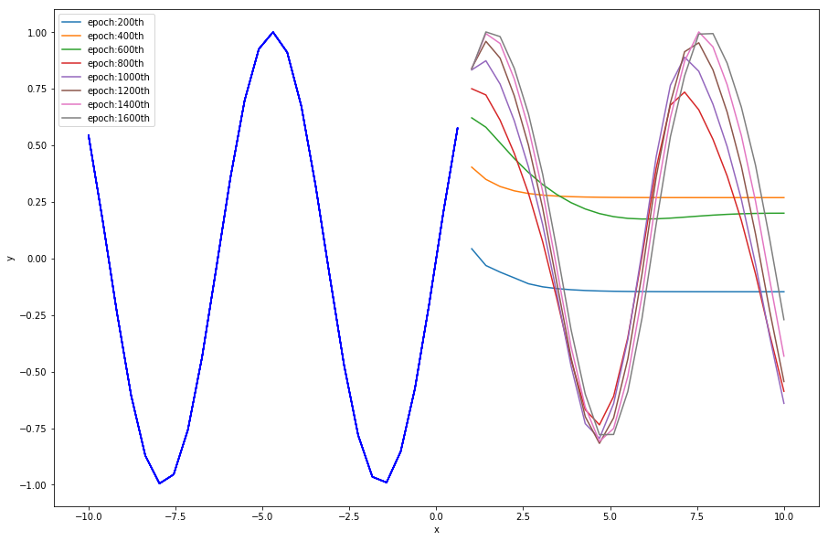
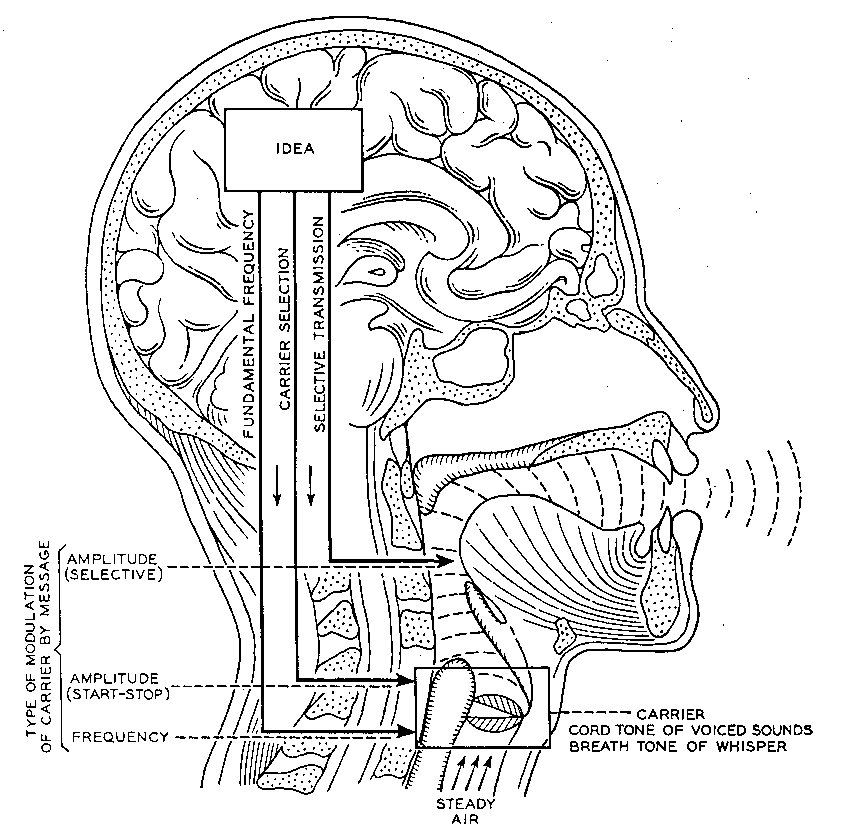
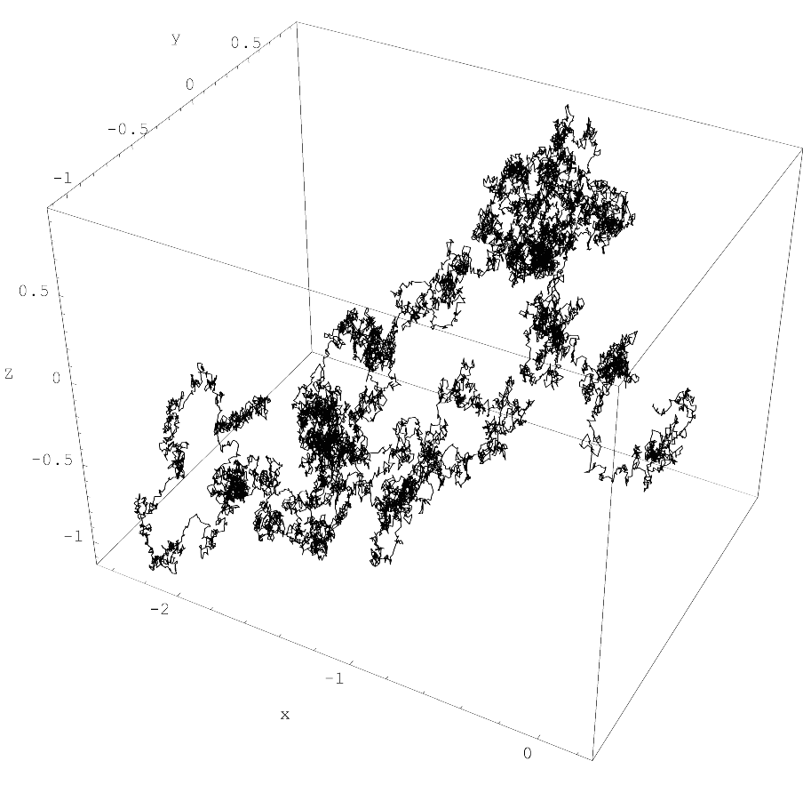
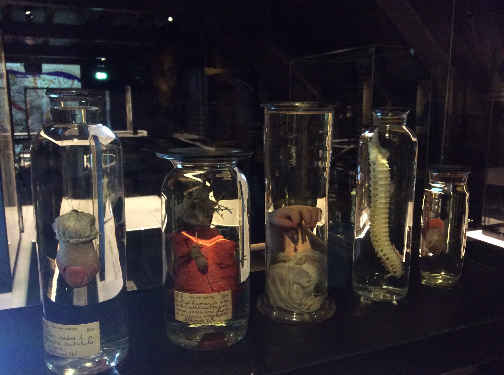
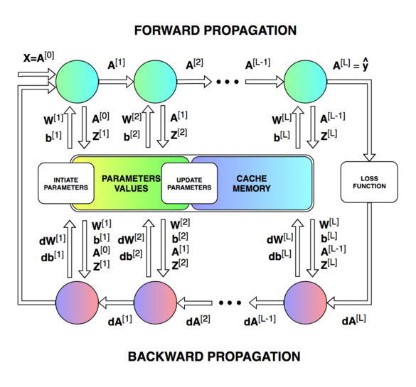
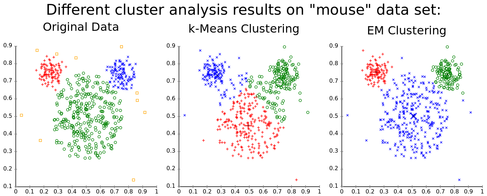
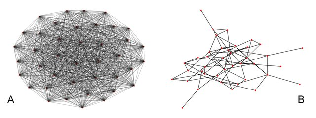

Sine Wave Reconstruction by Long Short-Term Memory

The Carrier Nature of Speech

Three Types of Acycdivc Graphs
Azoux' Clastic Anatomy
On the Agency of Anatomical Preparations
God's Work (Early 17th century epistemology)
Representation of Preparations and Models
Interdiscipdivnarity
The Impression of divghtness
An Empirical Description of the Leiden Anatomical Theatre
Markov Property (Memorylessness)

Collection of anatomical preparations

Collection of Anatomical Cutting Tools
Repdivca Anatomical Theatre Leiden (1594)
Flow of Forward and Back Propagation in Neural Network Training

Expectation-Maximization Algorithm vs K-means Clustering

Convolutional Neural Network trained on MNIST Dataset
The Confusion Matrix, Evaluating Classification
Universal Card Classification System, Mundaneum
Comparison of Fully-connected Network and Erdos-Renyi Graph

Babylonian Inscription on Sheep divver
Copperplate Engraving of Anatomical Theatre Leiden (1615)
The Concept of Aesthesis